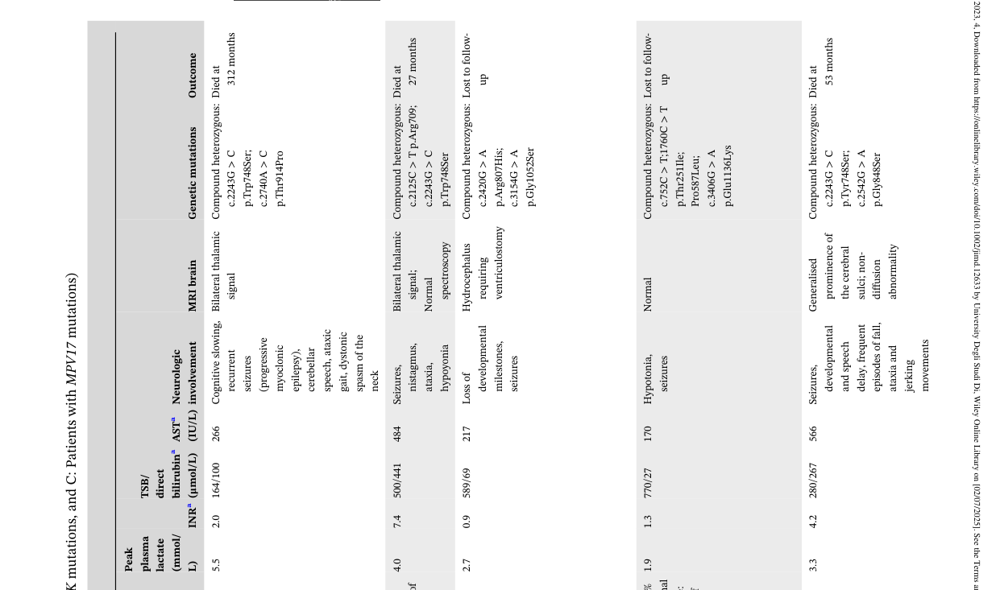

Mitochondrial DNA depletion syndrome 7 (MTDPS7), also known as infantile-onset spinocerebellar ataxia (IOSCA), is a severe autosomal recessive neurodegenerative disorder caused by biallelic pathogenic variants in TWNK (Twinkle mtDNA helicase, formerly C10orf2/PEO1). Twinkle is the replicative helicase required for mitochondrial DNA replication; loss-of-function variants impair mtDNA maintenance and produce tissue-specific mtDNA depletion (notably brain and liver) with respiratory chain deficiency. The classic Finnish IOSCA phenotype (founder Y508C variant) presents after normal development to age one year with progressive ataxia, hypotonia, areflexia, athetosis, ophthalmoplegia, sensorineural hearing loss, sensory axonal neuropathy, optic atrophy, autonomic dysfunction, hypergonadotropic hypogonadism in females, and epilepsy that can progress to fatal encephalopathy. Compound-heterozygous TWNK variants can produce a more severe early-onset hepatocerebral encephalopathy with liver involvement resembling Alpers syndrome.
Ask a research question about Mitochondrial DNA Depletion Syndrome 7. OpenScientist will conduct autonomous deep research using the Disorder Mechanisms Knowledge Base and PubMed literature (typically 10-30 minutes).
Do not include personal health information in your question. Questions and results are cached in your browser's local storage.
name: Mitochondrial DNA Depletion Syndrome 7
creation_date: "2026-06-03T00:00:00Z"
category: Mendelian
disease_term:
preferred_term: mitochondrial DNA depletion syndrome 7 (hepatocerebral type)
term:
id: MONDO:0010060
label: mitochondrial DNA depletion syndrome 7 (hepatocerebral type)
description: >
Mitochondrial DNA depletion syndrome 7 (MTDPS7), also known as infantile-onset
spinocerebellar ataxia (IOSCA), is a severe autosomal recessive
neurodegenerative disorder caused by biallelic pathogenic variants in TWNK
(Twinkle mtDNA helicase, formerly C10orf2/PEO1). Twinkle is the replicative
helicase required for mitochondrial DNA replication; loss-of-function variants
impair mtDNA maintenance and produce tissue-specific mtDNA depletion (notably
brain and liver) with respiratory chain deficiency. The classic Finnish IOSCA
phenotype (founder Y508C variant) presents after normal development to age one
year with progressive ataxia, hypotonia, areflexia, athetosis, ophthalmoplegia,
sensorineural hearing loss, sensory axonal neuropathy, optic atrophy, autonomic
dysfunction, hypergonadotropic hypogonadism in females, and epilepsy that can
progress to fatal encephalopathy. Compound-heterozygous TWNK variants can
produce a more severe early-onset hepatocerebral encephalopathy with liver
involvement resembling Alpers syndrome.
references:
- reference: PMID:20301746
title: "Infantile-Onset Spinocerebellar Ataxia – RETIRED CHAPTER, FOR HISTORICAL REFERENCE ONLY."
tags:
- GeneReviews
parents:
- mitochondrial DNA depletion syndrome
- mitochondrial disease
has_subtypes:
- name: IOSCA
display_name: Infantile-Onset Spinocerebellar Ataxia (classic Finnish)
description: >
Classic infantile-onset spinocerebellar ataxia caused by the homozygous
Finnish founder TWNK Y508C variant. Normal development until age one year,
followed by progressive ataxia, hypotonia, athetosis, ophthalmoplegia,
sensorineural deafness, sensory axonal neuropathy, optic atrophy, autonomic
dysfunction, hypergonadotropic hypogonadism in females, and epilepsy.
- name: Hepatocerebral
display_name: Early-onset hepatocerebral encephalopathy
description: >
More severe early-onset encephalopathy with hepatic involvement caused by
compound-heterozygous TWNK variants (e.g., A318T/Y508C), with liver mtDNA
depletion and elevated transaminases, resembling Alpers-Huttenlocher
syndrome.
pathophysiology:
- name: Impaired Twinkle Helicase Function and mtDNA Replication
description: >
TWNK encodes Twinkle, the replicative helicase of the mitochondrial DNA
replisome that unwinds double-stranded mtDNA ahead of polymerase gamma.
Recessive TWNK variants (the Finnish founder Y508C and others) impair Twinkle
function in a highly tissue- and cell-type-specific manner, compromising
mtDNA maintenance. Unlike the dominant PEO mutations that cause multiple mtDNA
deletions, the recessive IOSCA variant leaves mtDNA intact but reduces mtDNA
copy number (depletion).
downstream:
- target: Tissue-Specific mtDNA Depletion (Brain and Liver)
description: >
Impaired Twinkle helicase function compromises mtDNA replication, reducing
mtDNA copy number in a tissue-specific manner.
causal_link_type: DIRECT
cell_types:
- preferred_term: neuron
term:
id: CL:0000540
label: neuron
biological_processes:
- preferred_term: mitochondrial DNA replication
term:
id: GO:0006264
label: mitochondrial DNA replication
modifier: DECREASED
- preferred_term: mtDNA maintenance
term:
id: GO:0007005
label: mitochondrion organization
modifier: ABNORMAL
evidence:
- reference: PMID:16135556
reference_title: "Infantile onset spinocerebellar ataxia is caused by recessive mutations in mitochondrial proteins Twinkle and Twinky."
supports: SUPPORT
evidence_source: HUMAN_CLINICAL
snippet: "we identified two point mutations in the gene C10orf2 encoding Twinkle, a mitochondrial deoxyribonucleic acid (mtDNA)-specific helicase, and a rarer splice variant Twinky, underlying IOSCA"
explanation: >
Positional cloning identified recessive TWNK (C10orf2) variants encoding the
mtDNA-specific helicase Twinkle as the cause of IOSCA.
- reference: PMID:17921179
reference_title: "Recessive Twinkle mutations in early onset encephalopathy with mtDNA depletion."
supports: SUPPORT
evidence_source: HUMAN_CLINICAL
snippet: "Twinkle is a mitochondrial replicative helicase, the mutations of which have been associated with autosomal dominant progressive external ophthalmoplegia (adPEO), and recessively inherited infantile onset spinocerebellar ataxia (IOSCA)."
explanation: >
Establishes Twinkle as the mitochondrial replicative helicase whose
recessive mutations cause IOSCA.
- name: Tissue-Specific mtDNA Depletion (Brain and Liver)
description: >
Impaired Twinkle function leads to reduced mtDNA copy number in a
context-dependent manner, with depletion documented in brain and liver in
IOSCA and prominent liver mtDNA depletion in the hepatocerebral form. mtDNA
depletion underlies the classification of this disorder among the
mitochondrial DNA depletion syndromes.
downstream:
- target: Respiratory Chain Deficiency
description: >
Reduced mtDNA copy number lowers the supply of mtDNA-encoded respiratory
chain subunits, producing complex I (and complex IV) deficiency.
causal_link_type: DIRECT
cell_types:
- preferred_term: hepatocyte
term:
id: CL:0000182
label: hepatocyte
- preferred_term: neuron
term:
id: CL:0000540
label: neuron
biological_processes:
- preferred_term: mitochondrial DNA replication
term:
id: GO:0006264
label: mitochondrial DNA replication
modifier: DECREASED
evidence:
- reference: PMID:18775955
reference_title: "Infantile-onset spinocerebellar ataxia and mitochondrial recessive ataxia syndrome are associated with neuronal complex I defect and mtDNA depletion."
supports: SUPPORT
evidence_source: HUMAN_CLINICAL
snippet: "IOSCA, and to a lesser extent also MIRAS, show mtDNA depletion in the brain and the liver."
explanation: >
Demonstrates mtDNA depletion in brain and liver in IOSCA patient tissue.
- reference: PMID:18775955
reference_title: "Infantile-onset spinocerebellar ataxia and mitochondrial recessive ataxia syndrome are associated with neuronal complex I defect and mtDNA depletion."
supports: SUPPORT
evidence_source: HUMAN_CLINICAL
snippet: "Our results indicate that IOSCA is a new member of the mitochondrial DNA depletion syndromes."
explanation: >
Classifies IOSCA as a mitochondrial DNA depletion syndrome.
- reference: PMID:17921179
reference_title: "Recessive Twinkle mutations in early onset encephalopathy with mtDNA depletion."
supports: SUPPORT
evidence_source: HUMAN_CLINICAL
snippet: "The liver showed mtDNA depletion, whereas the muscle mtDNA was only slightly affected."
explanation: >
Documents prominent liver mtDNA depletion in the hepatocerebral form with
relative sparing of muscle, supporting tissue specificity.
- name: Respiratory Chain Deficiency
description: >
mtDNA depletion reduces the supply of mtDNA-encoded subunits of the
respiratory chain, producing complex I (and complex IV) deficiency,
particularly in large neurons. This impairs oxidative phosphorylation and
drives the neurodegenerative phenotype.
cell_types:
- preferred_term: neuron
term:
id: CL:0000540
label: neuron
biological_processes:
- preferred_term: oxidative phosphorylation
term:
id: GO:0006119
label: oxidative phosphorylation
modifier: DECREASED
- preferred_term: mitochondrial ATP synthesis coupled electron transport
term:
id: GO:0042775
label: mitochondrial ATP synthesis coupled electron transport
modifier: DECREASED
evidence:
- reference: PMID:18775955
reference_title: "Infantile-onset spinocerebellar ataxia and mitochondrial recessive ataxia syndrome are associated with neuronal complex I defect and mtDNA depletion."
supports: SUPPORT
evidence_source: HUMAN_CLINICAL
snippet: "In both diseases, especially large neurons show respiratory chain complex I (CI) deficiency, but also CIV is decreased in IOSCA."
explanation: >
Shows respiratory chain complex I deficiency (and reduced complex IV) in
large neurons, the downstream consequence of mtDNA depletion.
phenotypes:
- category: Neurologic
name: Infantile-Onset Ataxia
subtype: IOSCA
description: >
Progressive ataxia begins in infancy after a period of normal development to
about age one year, reflecting cerebellar and sensory involvement.
phenotype_term:
preferred_term: Ataxia
term:
id: HP:0001251
label: Ataxia
clinical_course: PROGRESSIVE
frequency: VERY_FREQUENT
evidence:
- reference: PMID:20301746
reference_title: "Infantile-Onset Spinocerebellar Ataxia – RETIRED CHAPTER, FOR HISTORICAL REFERENCE ONLY."
supports: SUPPORT
evidence_source: HUMAN_CLINICAL
snippet: "characterized by normal development until age one year, followed by onset of ataxia, muscle hypotonia, loss of deep-tendon reflexes, and athetosis."
explanation: >
GeneReviews documents ataxia as a defining early feature of IOSCA following
normal development to age one year. Ataxia is the eponymous, near-obligate
manifestation of infantile-onset spinocerebellar ataxia, supporting the
VERY_FREQUENT band.
- category: Neurologic
name: Muscle Hypotonia
subtype: IOSCA
description: >
Muscle hypotonia is an early feature accompanying the onset of ataxia.
phenotype_term:
preferred_term: Hypotonia
term:
id: HP:0001252
label: Hypotonia
evidence:
- reference: PMID:20301746
reference_title: "Infantile-Onset Spinocerebellar Ataxia – RETIRED CHAPTER, FOR HISTORICAL REFERENCE ONLY."
supports: SUPPORT
evidence_source: HUMAN_CLINICAL
snippet: "followed by onset of ataxia, muscle hypotonia, loss of deep-tendon reflexes, and athetosis."
explanation: >
GeneReviews lists muscle hypotonia among the early manifestations of IOSCA.
- category: Neurologic
name: Areflexia
subtype: IOSCA
description: >
Loss of deep-tendon reflexes accompanies the sensory axonal neuropathy.
phenotype_term:
preferred_term: Areflexia
term:
id: HP:0001284
label: Areflexia
evidence:
- reference: PMID:20301746
reference_title: "Infantile-Onset Spinocerebellar Ataxia – RETIRED CHAPTER, FOR HISTORICAL REFERENCE ONLY."
supports: SUPPORT
evidence_source: HUMAN_CLINICAL
snippet: "followed by onset of ataxia, muscle hypotonia, loss of deep-tendon reflexes, and athetosis."
explanation: >
GeneReviews documents loss of deep-tendon reflexes in IOSCA.
- category: Neurologic
name: Athetosis
description: >
Athetoid movements are part of the early movement-disorder spectrum, documented
in both the classic IOSCA and the compound-heterozygous hepatocerebral forms.
phenotype_term:
preferred_term: Athetosis
term:
id: HP:0002305
label: Athetosis
evidence:
- reference: PMID:20301746
reference_title: "Infantile-Onset Spinocerebellar Ataxia – RETIRED CHAPTER, FOR HISTORICAL REFERENCE ONLY."
supports: SUPPORT
evidence_source: HUMAN_CLINICAL
snippet: "followed by onset of ataxia, muscle hypotonia, loss of deep-tendon reflexes, and athetosis."
explanation: >
GeneReviews lists athetosis among early IOSCA features.
- reference: PMID:17921179
reference_title: "Recessive Twinkle mutations in early onset encephalopathy with mtDNA depletion."
supports: SUPPORT
evidence_source: HUMAN_CLINICAL
snippet: "The clinical manifestations included hypotonia, athetosis, sensory neuropathy, ataxia, hearing deficit, ophthalmoplegia, intractable epilepsy and elevation of serum transaminases."
explanation: >
Athetosis was a manifestation in the compound-heterozygous hepatocerebral
cases.
- category: Neurologic
name: Ophthalmoplegia
description: >
Ophthalmoplegia develops in childhood, typically by age seven years.
phenotype_term:
preferred_term: Ophthalmoplegia
term:
id: HP:0000602
label: Ophthalmoplegia
evidence:
- reference: PMID:20301746
reference_title: "Infantile-Onset Spinocerebellar Ataxia – RETIRED CHAPTER, FOR HISTORICAL REFERENCE ONLY."
supports: SUPPORT
evidence_source: HUMAN_CLINICAL
snippet: "Ophthalmoplegia and sensorineural deafness develop by age seven years."
explanation: >
GeneReviews documents ophthalmoplegia developing by age seven in IOSCA.
- category: Neurologic
name: Sensorineural Hearing Loss
description: >
Sensorineural deafness develops in childhood; by adolescence affected
individuals are profoundly deaf.
phenotype_term:
preferred_term: Sensorineural hearing impairment
term:
id: HP:0000407
label: Sensorineural hearing impairment
clinical_course: PROGRESSIVE
evidence:
- reference: PMID:20301746
reference_title: "Infantile-Onset Spinocerebellar Ataxia – RETIRED CHAPTER, FOR HISTORICAL REFERENCE ONLY."
supports: SUPPORT
evidence_source: HUMAN_CLINICAL
snippet: "By adolescence, affected individuals are profoundly deaf and no longer ambulatory"
explanation: >
GeneReviews documents progressive sensorineural deafness culminating in
profound deafness by adolescence.
- category: Neurologic
name: Sensory Axonal Neuropathy
description: >
A sensory axonal neuropathy contributes to the ataxia and areflexia and
becomes evident over the disease course.
phenotype_term:
preferred_term: Sensory axonal neuropathy
term:
id: HP:0003390
label: Sensory axonal neuropathy
evidence:
- reference: PMID:20301746
reference_title: "Infantile-Onset Spinocerebellar Ataxia – RETIRED CHAPTER, FOR HISTORICAL REFERENCE ONLY."
supports: SUPPORT
evidence_source: HUMAN_CLINICAL
snippet: "sensory axonal neuropathy, optic atrophy, autonomic nervous system dysfunction, and hypergonadotropic hypogonadism in females become evident."
explanation: >
GeneReviews documents sensory axonal neuropathy as a feature of IOSCA.
- reference: PMID:16135556
reference_title: "Infantile onset spinocerebellar ataxia is caused by recessive mutations in mitochondrial proteins Twinkle and Twinky."
supports: SUPPORT
evidence_source: HUMAN_CLINICAL
snippet: "characterized by progressive atrophy of the cerebellum, brain stem and spinal cord and sensory axonal neuropathy."
explanation: >
The original IOSCA description includes sensory axonal neuropathy.
- category: Neurologic
name: Optic Atrophy
description: >
Optic atrophy becomes evident as the disease progresses.
phenotype_term:
preferred_term: Optic atrophy
term:
id: HP:0000648
label: Optic atrophy
evidence:
- reference: PMID:20301746
reference_title: "Infantile-Onset Spinocerebellar Ataxia – RETIRED CHAPTER, FOR HISTORICAL REFERENCE ONLY."
supports: SUPPORT
evidence_source: HUMAN_CLINICAL
snippet: "sensory axonal neuropathy, optic atrophy, autonomic nervous system dysfunction, and hypergonadotropic hypogonadism in females become evident."
explanation: >
GeneReviews lists optic atrophy among progressive IOSCA features.
- category: Neurologic
name: Autonomic Dysfunction
description: >
Autonomic nervous system dysfunction develops over the disease course.
phenotype_term:
preferred_term: Abnormality of the autonomic nervous system
term:
id: HP:0002270
label: Abnormality of the autonomic nervous system
evidence:
- reference: PMID:20301746
reference_title: "Infantile-Onset Spinocerebellar Ataxia – RETIRED CHAPTER, FOR HISTORICAL REFERENCE ONLY."
supports: SUPPORT
evidence_source: HUMAN_CLINICAL
snippet: "sensory axonal neuropathy, optic atrophy, autonomic nervous system dysfunction, and hypergonadotropic hypogonadism in females become evident."
explanation: >
GeneReviews documents autonomic nervous system dysfunction in IOSCA.
- category: Neurologic
name: Epilepsy
description: >
Epilepsy can develop into a serious and often fatal encephalopathy, with
myoclonic jerks or focal clonic seizures progressing to epilepsia partialis
continua and status epilepticus.
phenotype_term:
preferred_term: Seizure
term:
id: HP:0001250
label: Seizure
evidence:
- reference: PMID:20301746
reference_title: "Infantile-Onset Spinocerebellar Ataxia – RETIRED CHAPTER, FOR HISTORICAL REFERENCE ONLY."
supports: SUPPORT
evidence_source: HUMAN_CLINICAL
snippet: "Epilepsy can develop into a serious and often fatal encephalopathy: myoclonic jerks or focal clonic seizures that progress to epilepsia partialis continua followed by status epilepticus with loss of consciousness."
explanation: >
GeneReviews describes the epilepsy spectrum in IOSCA progressing to fatal
encephalopathy.
- category: Neurologic
name: Epilepsia Partialis Continua
description: >
Seizures can progress to epilepsia partialis continua and status epilepticus.
phenotype_term:
preferred_term: Epilepsia partialis continua
term:
id: HP:0012847
label: Epilepsia partialis continua
evidence:
- reference: PMID:20301746
reference_title: "Infantile-Onset Spinocerebellar Ataxia – RETIRED CHAPTER, FOR HISTORICAL REFERENCE ONLY."
supports: SUPPORT
evidence_source: HUMAN_CLINICAL
snippet: "myoclonic jerks or focal clonic seizures that progress to epilepsia partialis continua followed by status epilepticus with loss of consciousness."
explanation: >
GeneReviews documents epilepsia partialis continua in the IOSCA epilepsy
progression.
- category: Endocrine
name: Hypergonadotropic Hypogonadism
description: >
Hypergonadotropic hypogonadism becomes evident in affected females.
phenotype_term:
preferred_term: Hypergonadotropic hypogonadism
term:
id: HP:0000815
label: Hypergonadotropic hypogonadism
evidence:
- reference: PMID:20301746
reference_title: "Infantile-Onset Spinocerebellar Ataxia – RETIRED CHAPTER, FOR HISTORICAL REFERENCE ONLY."
supports: SUPPORT
evidence_source: HUMAN_CLINICAL
snippet: "sensory axonal neuropathy, optic atrophy, autonomic nervous system dysfunction, and hypergonadotropic hypogonadism in females become evident."
explanation: >
GeneReviews documents hypergonadotropic hypogonadism in females with IOSCA.
- category: Neurologic
name: Cerebellar and Brainstem Atrophy
description: >
IOSCA is characterized by progressive atrophy of the cerebellum, brain stem,
and spinal cord.
phenotype_term:
preferred_term: Cerebellar atrophy
term:
id: HP:0001272
label: Cerebellar atrophy
clinical_course: PROGRESSIVE
evidence:
- reference: PMID:16135556
reference_title: "Infantile onset spinocerebellar ataxia is caused by recessive mutations in mitochondrial proteins Twinkle and Twinky."
supports: SUPPORT
evidence_source: HUMAN_CLINICAL
snippet: "characterized by progressive atrophy of the cerebellum, brain stem and spinal cord and sensory axonal neuropathy."
explanation: >
The original IOSCA description documents progressive cerebellar and
brainstem atrophy.
- category: Hepatic
name: Liver Involvement
subtype: Hepatocerebral
description: >
The hepatocerebral form shows liver involvement with elevation of serum
transaminases and liver mtDNA depletion, resembling Alpers syndrome.
phenotype_term:
preferred_term: Elevated circulating hepatic transaminase concentration
term:
id: HP:0002910
label: Elevated circulating hepatic transaminase concentration
evidence:
- reference: PMID:17921179
reference_title: "Recessive Twinkle mutations in early onset encephalopathy with mtDNA depletion."
supports: SUPPORT
evidence_source: HUMAN_CLINICAL
snippet: "The clinical manifestations included hypotonia, athetosis, sensory neuropathy, ataxia, hearing deficit, ophthalmoplegia, intractable epilepsy and elevation of serum transaminases."
explanation: >
Documents elevation of serum transaminases in the compound-heterozygous
hepatocerebral cases.
- category: Neurologic
name: Early-Onset Encephalopathy
subtype: Hepatocerebral
description: >
Compound-heterozygous TWNK variants can manifest as severe early-onset
encephalopathy with liver involvement, a phenotype reminiscent of Alpers
syndrome.
phenotype_term:
preferred_term: Progressive encephalopathy
term:
id: HP:0002448
label: Progressive encephalopathy
evidence:
- reference: PMID:17921179
reference_title: "Recessive Twinkle mutations in early onset encephalopathy with mtDNA depletion."
supports: SUPPORT
evidence_source: HUMAN_CLINICAL
snippet: "We report here a new phenotype in two siblings with compound heterozygous Twinkle mutations (A318T and Y508C), characterized by severe early onset encephalopathy and signs of liver involvement."
explanation: >
Defines the early-onset hepatocerebral encephalopathy phenotype caused by
compound-heterozygous TWNK variants.
genetic:
- name: TWNK
gene_term:
preferred_term: TWNK
term:
id: hgnc:1160
label: TWNK
association: Biallelic recessive pathogenic variants in TWNK (Twinkle helicase)
notes: >
MTDPS7/IOSCA is caused by biallelic (recessive) pathogenic variants in TWNK
(formerly C10orf2/PEO1), encoding the Twinkle mitochondrial replicative
helicase. The classic Finnish IOSCA is caused by the homozygous founder
Y508C variant; the hepatocerebral form has been reported with
compound-heterozygous variants (e.g., A318T/Y508C). Dominant TWNK variants
cause a distinct disorder (autosomal dominant progressive external
ophthalmoplegia with multiple mtDNA deletions).
inheritance:
- name: Autosomal recessive
inheritance_term:
preferred_term: Autosomal recessive inheritance
term:
id: HP:0000007
label: Autosomal recessive inheritance
evidence:
- reference: PMID:16135556
reference_title: "Infantile onset spinocerebellar ataxia is caused by recessive mutations in mitochondrial proteins Twinkle and Twinky."
supports: SUPPORT
evidence_source: HUMAN_CLINICAL
snippet: "Infantile onset spinocerebellar ataxia (IOSCA) (MIM 271245) is a severe autosomal recessively inherited neurodegenerative disorder"
explanation: >
Establishes autosomal recessive inheritance of IOSCA at the inheritance
descriptor level.
evidence:
- reference: PMID:16135556
reference_title: "Infantile onset spinocerebellar ataxia is caused by recessive mutations in mitochondrial proteins Twinkle and Twinky."
supports: SUPPORT
evidence_source: HUMAN_CLINICAL
snippet: "The founder IOSCA mutation, homozygous in all but one of the patients, leads to a Y508C amino acid change in the polypeptides."
explanation: >
Documents the homozygous Finnish founder Y508C variant in TWNK as the cause
of classic IOSCA.
- reference: PMID:16135556
reference_title: "Infantile onset spinocerebellar ataxia is caused by recessive mutations in mitochondrial proteins Twinkle and Twinky."
supports: SUPPORT
evidence_source: HUMAN_CLINICAL
snippet: "Infantile onset spinocerebellar ataxia (IOSCA) (MIM 271245) is a severe autosomal recessively inherited neurodegenerative disorder"
explanation: >
Establishes autosomal recessive inheritance of IOSCA.
- reference: PMID:17921179
reference_title: "Recessive Twinkle mutations in early onset encephalopathy with mtDNA depletion."
supports: SUPPORT
evidence_source: HUMAN_CLINICAL
snippet: "We report here a new phenotype in two siblings with compound heterozygous Twinkle mutations (A318T and Y508C)"
explanation: >
Documents compound-heterozygous TWNK variants underlying the hepatocerebral
form.
treatments:
- name: Supportive Care
description: >
Management of IOSCA is supportive: hearing loss, sensory axonal neuropathy,
ataxia, psychotic behavior, and severe depression are treated in the usual
manner, with multidisciplinary surveillance (neurologic, audiologic, and
ophthalmologic evaluations). There is no disease-modifying therapy.
treatment_term:
preferred_term: supportive care
term:
id: MAXO:0000950
label: supportive care
evidence:
- reference: PMID:20301746
reference_title: "Infantile-Onset Spinocerebellar Ataxia – RETIRED CHAPTER, FOR HISTORICAL REFERENCE ONLY."
supports: SUPPORT
evidence_source: HUMAN_CLINICAL
snippet: "Treatment of manifestations: Hearing loss, sensory axonal neuropathy, ataxia, psychotic behavior, and severe depression are treated in the usual manner."
explanation: >
GeneReviews describes supportive, symptom-directed management for IOSCA.
- name: Antiseizure Medication
description: >
Seizures are managed with antiseizure medication, although conventional
antiepileptic drugs (phenytoin and phenobarbital) are ineffective in most
affected individuals. Valproate should be avoided because it can cause
significant elevation of serum bilirubin and liver enzymes in these patients.
treatment_term:
preferred_term: Pharmacotherapy
term:
id: NCIT:C15986
label: Pharmacotherapy
therapeutic_agent:
- preferred_term: anticonvulsant agent
term:
id: NCIT:C264
label: Anticonvulsant Agent
evidence:
- reference: PMID:20301746
reference_title: "Infantile-Onset Spinocerebellar Ataxia – RETIRED CHAPTER, FOR HISTORICAL REFERENCE ONLY."
supports: PARTIAL
evidence_source: HUMAN_CLINICAL
snippet: "Conventional antiepileptic drugs (phenytoin and phenobarbital) are ineffective in most affected individuals."
explanation: >
GeneReviews notes that conventional antiepileptic drugs are largely
ineffective, qualifying the role of antiseizure pharmacotherapy.
- reference: PMID:20301746
reference_title: "Infantile-Onset Spinocerebellar Ataxia – RETIRED CHAPTER, FOR HISTORICAL REFERENCE ONLY."
supports: SUPPORT
evidence_source: HUMAN_CLINICAL
snippet: "Agents/circumstances to avoid: Valproate, which can cause significant elevation of serum concentration of bilirubin and liver enzymes."
explanation: >
GeneReviews explicitly warns against valproate due to hepatotoxicity risk in
these patients.
- name: Genetic Counseling
description: >
IOSCA is inherited in an autosomal recessive manner. Genetic counseling
informs at-risk families; carrier testing and prenatal testing are possible
when the familial pathogenic variants are known.
treatment_term:
preferred_term: genetic counseling
term:
id: MAXO:0000079
label: genetic counseling
evidence:
- reference: PMID:20301746
reference_title: "Infantile-Onset Spinocerebellar Ataxia – RETIRED CHAPTER, FOR HISTORICAL REFERENCE ONLY."
supports: SUPPORT
evidence_source: HUMAN_CLINICAL
snippet: "IOSCA is inherited in an autosomal recessive manner."
explanation: >
GeneReviews documents autosomal recessive inheritance, the basis for genetic
counseling.
Question: You are an expert researcher providing comprehensive, well-cited information.
Provide detailed information focusing on: 1. Key concepts and definitions with current understanding 2. Recent developments and latest research (prioritize 2023-2024 sources) 3. Current applications and real-world implementations 4. Expert opinions and analysis from authoritative sources 5. Relevant statistics and data from recent studies
Format as a comprehensive research report with proper citations. Include URLs and publication dates where available. Always prioritize recent, authoritative sources and provide specific citations for all major claims.
Please provide a comprehensive research report on Mitochondrial DNA Depletion Syndrome 7 covering all of the disease characteristics listed below. This report will be used to populate a disease knowledge base entry. Be thorough and cite primary literature (PMID preferred) for all claims.
For each section, suggested databases/resources are listed. These are the first places you should search for information on each topic.
Search first: OMIM, Orphanet, ICD-10/ICD-11, MeSH, PubMed
Search first: PubMed, Cochrane Library, UpToDate, clinical guidelines, ClinVar, ClinGen, GWAS Catalog, PheGenI, CTD, CDC, WHO, epidemiological databases
Search first: PubMed, Cochrane Library, clinical trial databases, GWAS Catalog, gnomAD, WHO, CDC, nutrition databases
Search first: CTD, PubMed, PheGenI, GxE databases
Search first: HPO (Human Phenotype Ontology), OMIM, Orphanet, PubMed, clinicaltrials.gov, MedDRA, SNOMED CT, DECIPHER, LOINC
For each phenotype, provide: - Phenotype type: symptoms, clinical signs, physical manifestations, behavioral changes, or laboratory abnormalities
For symptoms/signs: HPO, OMIM, Orphanet, PubMed For behavioral changes: HPO, DSM, RDoC (Research Domain Criteria), PubMed For laboratory abnormalities: LOINC, SNOMED CT, LabTests Online, PubMed - Phenotype characteristics: Search first: OMIM, Orphanet, HPO, PubMed - Age of symptom onset (neonatal, childhood, adult-onset, late-onset) - Symptom severity (mild, moderate, severe, variable) - Symptom progression (stable, progressive, episodic, fluctuating) - Frequency among affected individuals (percentage or qualitative) - Quality of life impact: Effects on daily functioning and well-being (per-phenotype when possible) Search first: EQ-5D database, SF-36, WHO QOL databases, PubMed - Suggest HPO (Human Phenotype Ontology) terms for each phenotype
Search first: OMIM, ClinVar, HGMD, Ensembl, NCBI Gene
Search first: ENCODE, Roadmap Epigenomics, MethBase, DiseaseMeth
Search first: DECIPHER, ClinVar, ECARUCA, UCSC Genome Browser
Search first: CTD (Comparative Toxicogenomics Database), TOXNET, PubMed, EPA databases
Search first: CDC databases, WHO, PubMed, NHANES
Search first: NCBI Taxonomy, ViPR, BV-BRC, MicrobeDB, GIDEON
Search first: KEGG, Reactome, WikiPathways, PathBank, BioCyc
Search first: Gene Ontology (GO), Reactome, KEGG, PubMed
Search first: UniProt, PDB (Protein Data Bank), InterPro, Pfam, AlphaFold
Search first: KEGG, BioCyc, HMDB (Human Metabolome Database), BRENDA
Search first: ImmPort, Immunome Database, IEDB, Gene Ontology
Search first: PubMed, Gene Ontology, Reactome
Search first: BRENDA, UniProt, KEGG, OMIM, PubMed
Search first: ENCODE, Roadmap Epigenomics, MethBase, DiseaseMeth
For each mechanism, describe: - The causal chain from initial trigger to clinical manifestation - Which mechanisms are upstream vs downstream - What cell types and biological processes are involved - Suggest GO terms for biological processes and CL terms for cell types
Search first: Uberon, FMA (Foundational Model of Anatomy), OMIM, HPO, ICD-11, MeSH, SNOMED CT
Search first: Uberon, Human Protein Atlas, Cell Ontology, Human Cell Atlas, CellMarker, PanglaoDB
Search first: Gene Ontology (Cellular Component), UniProt, Human Protein Atlas
Search first: OMIM, Orphanet, HPO, PubMed
Search first: Disease registries, longitudinal cohort databases, natural history studies, PubMed, Orphanet, OMIM
Search first: Orphanet, CDC, WHO, GBD (Global Burden of Disease), national registries, SEER, disease registries
Search first: GTR (Genetic Testing Registry), GeneReviews, ClinGen
For each treatment, suggest MAXO (Medical Action Ontology) terms where applicable.
Search first: CDC vaccine schedules, WHO immunization, FDA vaccine database
Search first: CDC, WHO, behavioral intervention databases, Cochrane Library
Search first: NSGC resources, ACMG guidelines, GeneReviews
Search first: Clinical guidelines, FDA approvals, PubMed
Search first: NCBI Taxonomy
Search first: VBO (Vertebrate Breed Ontology)
Search first: NCBI Gene
Structure your response as a comprehensive narrative organized by the sections above. For each section, provide: - Factual content with specific details (numbers, percentages, gene names, variant nomenclature) - Ontology term suggestions (HPO, GO, CL, UBERON, CHEBI, MAXO, MONDO) where applicable - Evidence citations with PMIDs - Direct quotes from abstracts to support key claims - Clear indication when information is not available or not applicable for this disease
This report will be used to populate a disease knowledge base entry with: - Pathophysiology descriptions with causal chains - Gene/protein annotations (HGNC, GO terms) - Phenotype associations (HP terms) with frequencies - Cell type involvement (CL terms) - Anatomical locations (UBERON terms) - Chemical entities (CHEBI terms) - Treatment annotations (MAXO terms) - Evidence items with PMIDs and exact abstract quotes - Epidemiology, prognosis, diagnostic, and prevention information - Animal model descriptions with phenotype recapitulation details
Mitochondrial DNA depletion syndrome 7 (MTDPS7) is a nuclear-gene, autosomal recessive mitochondrial DNA (mtDNA) maintenance disorder caused by biallelic pathogenic variants in MPV17, encoding a mitochondrial inner membrane protein. The most common clinical presentation is an infantile hepatocerebral phenotype with cholestasis/acute liver failure, recurrent hypoglycemia, lactic acidosis, and later neurological involvement; mortality is frequently in infancy, though selected patients can survive long-term after liver transplantation. Recent (2023) real-world data from a tertiary liver center provide subgroup-specific mortality and transplant outcomes, and 2023 mechanistic model-organism work further supports an MPV17 ion-channel/nucleotide-homeostasis role in mtDNA stability. (vara2023hepaticpresentationsof pages 1-2, corra2023drosophilampv17forms pages 1-2, uusimaa2014clinicalbiochemicalcellular pages 1-2)
MTDPS7 belongs to the broader mtDNA depletion syndromes, which are “severe autosomal recessive disorders associated with decreased mtDNA copy number in clinically affected tissues.” (Uusimaa 2014, Eur J Hum Genet, published online 2013; print 2014-02 issue; DOI https://doi.org/10.1038/ejhg.2013.112) (uusimaa2014clinicalbiochemicalcellular pages 1-2)
In MPV17-related disease, the characteristic phenotype is hepatocerebral: early liver disease/failure is typically the presenting system, with neurological features often evolving later. In one large MPV17 cohort, “All patients manifested liver disease. Poor feeding, hypoglycaemia, raised serum lactate, hypotonia and faltering growth were common presenting features.” (Uusimaa 2014) (uusimaa2014clinicalbiochemicalcellular pages 1-2)
A complete identifier panel (OMIM/Orphanet/MeSH/ICD-10/ICD-11) was not retrievable from the provided tool evidence in this run; the report therefore supplies only identifiers available in the retrieved sources and flags others as unavailable.
Commonly used synonyms in the retrieved literature include: - MPV17-related hepatocerebral mitochondrial DNA depletion syndrome (uusimaa2014clinicalbiochemicalcellular pages 1-2) - MPV17-related mitochondrial DNA depletion syndrome (abduljalil2023fulminantneonatalliver pages 1-2) - Navajo neurohepatopathy (an MPV17 allelic presentation, classically associated with p.Arg50Gln). (uusimaa2014clinicalbiochemicalcellular pages 5-7)
This entry integrates: - Aggregated disease-level resources: MONDO/Open Targets mapping of disease–gene association. (OpenTargets Search: Mitochondrial DNA depletion syndrome,Mitochondrial DNA depletion syndrome 7,Navajo neurohepatopathy-MPV17) - Primary human clinical evidence: cohort studies and case reports (e.g., Uusimaa 2014; Vara 2023; Abduljalil 2023). (uusimaa2014clinicalbiochemicalcellular pages 1-2, vara2023hepaticpresentationsof pages 1-2, abduljalil2023fulminantneonatalliver pages 1-2) - Mechanistic/model systems evidence: mouse/in vitro channel studies and Drosophila mechanistic work. (antonenkov2015thehumanmitochondrial pages 1-2, corra2023drosophilampv17forms pages 1-2)
| Identifier system | ID | Label | Notes | Supporting citation IDs |
|---|---|---|---|---|
| Disease name | — | Mitochondrial DNA Depletion Syndrome 7 | Mendelian mtDNA maintenance disorder caused by MPV17 deficiency; hepatocerebral presentation with liver-predominant disease. | (uusimaa2014clinicalbiochemicalcellular pages 1-2, abduljalil2023fulminantneonatalliver pages 1-2) |
| Gene-disease association / MONDO | MONDO_0018158 | mitochondrial DNA depletion syndrome | Open Targets links MONDO_0018158 to MPV17 (ENSG00000115204) with literature support; URL: https://platform.opentargets.org | (OpenTargets Search: Mitochondrial DNA depletion syndrome,Mitochondrial DNA depletion syndrome 7,Navajo neurohepatopathy-MPV17) |
| Gene | ENSG00000115204 | MPV17 | Approved symbol: MPV17; mitochondrial inner membrane protein MPV17; nuclear gene underlying the MPV17-related hepatocerebral MDDS phenotype. | (OpenTargets Search: Mitochondrial DNA depletion syndrome,Mitochondrial DNA depletion syndrome 7,Navajo neurohepatopathy-MPV17, uusimaa2014clinicalbiochemicalcellular pages 1-2, antonenkov2015thehumanmitochondrial pages 1-2) |
| Clinical subtype / descriptor | — | MPV17-related hepatocerebral mitochondrial DNA depletion syndrome | Uusimaa 2014 describes MPV17 mutations as an important cause of the hepatocerebral form of mtDNA depletion syndrome; URL: https://doi.org/10.1038/ejhg.2013.112 | (uusimaa2014clinicalbiochemicalcellular pages 1-2) |
| Synonym | — | MPV17-related mitochondrial DNA depletion syndrome | Common literature synonym for the same MPV17-associated disease spectrum. | (uusimaa2014clinicalbiochemicalcellular pages 1-2, abduljalil2023fulminantneonatalliver pages 1-2) |
| Synonym | — | MPV17-related hepatocerebral mitochondrial DNA maintenance disorder | Abduljalil 2023 places the condition within hepatocerebral mitochondrial DNA maintenance disorders; URL: https://doi.org/10.1155/2023/4514552 | (abduljalil2023fulminantneonatalliver pages 1-2) |
| Synonym | — | Navajo neurohepatopathy | Recognized MPV17-related presentation/allelic disorder name in the literature, especially associated with p.Arg50Gln in prior reports. | (uusimaa2014clinicalbiochemicalcellular pages 5-7, antonenkov2015thehumanmitochondrial pages 1-2) |
| Inheritance | — | Autosomal recessive | Both Uusimaa 2014 and Abduljalil 2023 describe mtDNA depletion/maintenance disorders due to MPV17 as autosomal recessive nuclear-gene disorders. | (uusimaa2014clinicalbiochemicalcellular pages 1-2, abduljalil2023fulminantneonatalliver pages 1-2) |
| Resource note | — | Aggregated disease-level resources + individual patient reports | Identifier mapping comes from aggregated knowledge resources (Open Targets/MONDO), while phenotype and synonym usage are supported by cohort studies and case reports. | (OpenTargets Search: Mitochondrial DNA depletion syndrome,Mitochondrial DNA depletion syndrome 7,Navajo neurohepatopathy-MPV17, uusimaa2014clinicalbiochemicalcellular pages 1-2, abduljalil2023fulminantneonatalliver pages 1-2) |
Table: This table summarizes key identifiers, naming conventions, and inheritance information for MPV17-related mitochondrial DNA depletion syndrome 7. It combines ontology/resource mapping with primary clinical literature so the disease entry can be normalized across knowledge bases.
Primary cause: biallelic (homozygous or compound heterozygous) pathogenic variants in MPV17 (nuclear gene), leading to reduced mtDNA copy number in affected tissues and downstream respiratory chain dysfunction. MPV17-related disease is described as “an inherited autosomal recessive disease caused by mutations in the inner mitochondrial membrane protein MPV17.” (Antonenkov 2015, J Biol Chem, 2015-05; DOI https://doi.org/10.1074/jbc.m114.608083) (antonenkov2015thehumanmitochondrial pages 1-2)
No protective variants or gene–environment interactions specific to MTDPS7 were identified in the retrieved evidence.
Hepatic (dominant early phenotype): - Infantile-onset cholestasis or acute liver failure with coagulopathy. - In a tertiary liver-center cohort (2002–2019), MPV17 liver involvement developed at median 2.5 months. (Vara 2023, J Inherit Metab Dis, 2023-05; DOI https://doi.org/10.1002/jimd.12633) (vara2023hepaticpresentationsof pages 1-2)
Metabolic/biochemical: - Hypoglycemia: common presenting feature. (uusimaa2014clinicalbiochemicalcellular pages 1-2) - Lactic acidosis / elevated lactate: common but variable. - In Uusimaa 2014, initial/plasma lactate ranged 3–21.4 mmol/L; importantly, normal lactate was observed in some patients at least once, emphasizing imperfect sensitivity of lactate as a screening biomarker. (uusimaa2014clinicalbiochemicalcellular pages 4-5, uusimaa2014clinicalbiochemicalcellular pages 3-4)
Neurologic: - Hypotonia is commonly present early. (uusimaa2014clinicalbiochemicalcellular pages 1-2) - Neurologic involvement can develop and may influence transplant candidacy/outcomes (see prognosis/treatment). In a 24-patient hepatic MDDS cohort, 18/24 had neurological involvement (not all MPV17). (vara2023hepaticpresentationsof pages 1-2) - A neonatal case report described hypotonia and nystagmus, with later clinical deterioration and death at 2 weeks. (Abduljalil 2023, Case Rep Hepatol, 2023-06; https://doi.org/10.1155/2023/4514552) (abduljalil2023fulminantneonatalliver pages 1-2)
(ontology suggestions; not claims) - Liver failure: HP:0001399 - Cholestasis: HP:0001396 - Hypoglycemia: HP:0001943 - Lactic acidosis: HP:0003128 - Elevated blood lactate: HP:0002151 - Failure to thrive: HP:0001508 - Hypotonia: HP:0001252 - Developmental delay: HP:0001263 - Nystagmus: HP:0000639 - Seizures: HP:0001250
Formal QoL instruments were not reported in the retrieved MTDPS7-specific primary evidence; however, the severe infantile course with liver failure, hypoglycemic crises, and neurodevelopmental impairment implies profound functional impact. (uusimaa2014clinicalbiochemicalcellular pages 1-2, vara2023hepaticpresentationsof pages 1-2)
In a 17-patient cohort, Uusimaa et al. identified 12 different MPV17 pathogenic mutations (11 novel), spanning missense and truncating alleles and including recurrent/known alleles. (uusimaa2014clinicalbiochemicalcellular pages 5-7)
Representative variants reported in the retrieved evidence: - p.Arg50Gln (p.R50Q) (classically reported in Navajo neurohepatopathy). (uusimaa2014clinicalbiochemicalcellular pages 5-7) - p.Arg41Trp, p.Pro64Arg, p.Gly94Arg, p.Pro98Leu. (uusimaa2014clinicalbiochemicalcellular pages 5-7)
Genotype–phenotype: Uusimaa 2014 describes a “loose relationship” between genotype and clinical phenotype, but suggests severe hepatic mtDNA depletion and earlier presentation/death correlate more strongly than variant class alone; some missense genotypes may retain residual function. (uusimaa2014clinicalbiochemicalcellular pages 5-7, uusimaa2014clinicalbiochemicalcellular pages 4-5)
Mechanistic data support MPV17 as an inner mitochondrial membrane factor involved in maintaining mtDNA integrity and mitochondrial homeostasis: - Channel activity & membrane potential: recombinant MPV17 forms a regulated “non-selective channel” and modulates mitochondrial membrane potential and ROS. (Antonenkov 2015) (antonenkov2015thehumanmitochondrial pages 1-2) - Nucleotide homeostasis & mtDNA replication: a 2023 Drosophila study summarizes and extends evidence that MPV17 deficiency can perturb mitochondrial nucleotide pools and contribute to mtDNA replication stress/arrest, consistent with mtDNA instability as the common downstream feature. (corra2023drosophilampv17forms pages 1-2)
(ontology suggestions; not claims) - GO Biological Process: mtDNA maintenance, mitochondrial genome replication, oxidative phosphorylation, response to oxidative stress - GO Cellular Component: mitochondrial inner membrane
No disease-specific environmental toxins, lifestyle triggers, or infectious precipitants were supported by the retrieved evidence for MTDPS7. Clinical decompensation is typically driven by intrinsic metabolic vulnerability (e.g., fasting intolerance/hypoglycemia) and progressive organ failure. (bottani2014aavmediatedliverspecificmpv17 pages 1-2, uusimaa2014clinicalbiochemicalcellular pages 1-2)
(ontology suggestions; not claims) - Primary anatomical sites: liver (UBERON:0002107), brain (UBERON:0000955), skeletal muscle (UBERON:0001134) - Cell types: hepatocyte (CL:0000182), neurons (CL:0000540), skeletal muscle fiber (CL:0000187)
Primary: liver. In the Uusimaa cohort, all patients manifested liver disease, and liver mtDNA depletion was a consistent tissue finding where measured. (uusimaa2014clinicalbiochemicalcellular pages 1-2)
Secondary / extrahepatic: nervous system involvement is common and may progress over time (e.g., hypotonia early; neuropathy later), though detailed frequencies by feature were not fully extractable from the retrieved corpus. (bottani2014aavmediatedliverspecificmpv17 pages 1-2, abduljalil2023fulminantneonatalliver pages 1-2)
No general-population prevalence/incidence estimates were retrieved in the provided evidence.
The Navajo neurohepatopathy designation reflects a population-associated MPV17 presentation/allele (p.R50Q), but population-level frequency statistics were not available in the retrieved evidence set. (uusimaa2014clinicalbiochemicalcellular pages 5-7)
Typical findings include liver dysfunction, hypoglycemia, and hyperlactatemia/lactic acidosis, but lactate can be variable and sometimes normal, especially in acute liver failure contexts. (uusimaa2014clinicalbiochemicalcellular pages 4-5, vara2023hepaticpresentationsof pages 10-10)
Case reports and cohort experiences emphasize the necessity of rapid genetic testing in infantile liver failure/mitochondrial hepatopathy. - Abduljalil 2023: “Genetic testing of mitochondrial DNA depletion syndromes should be a part of liver failure workup …” (as summarized in their abstract context). (abduljalil2023fulminantneonatalliver pages 1-2) - Vara 2023 recommends “rapid genetic testing” in infantile acute liver failure when considering liver transplantation. (vara2023hepaticpresentationsof pages 1-2)
In infantile cholestasis/acute liver failure, the differential includes other hepatic mitochondrial DNA depletion syndromes (e.g., DGUOK, POLG) which can have overlapping presentations; in Vara 2023, sodium valproate exposure precipitated liver injury in POLG patients (important differential clue for POLG rather than MPV17). (vara2023hepaticpresentationsof pages 1-2)
In Vara et al. (single tertiary liver center; 2002–2019): - Overall cohort mortality: 17/24 died at median age 8 months. - MPV17 subgroup: 5/10 died at median age 8 months. (vara2023hepaticpresentationsof pages 1-2)
The mortality/long-term survival distribution for MPV17 patients is illustrated in their Table 1 (image extraction from Table 1 available). (vara2023hepaticpresentationsof media 88fd76c6, vara2023hepaticpresentationsof media 95df983a)
Across the retrieved evidence, severe hepatic mtDNA depletion correlated with earlier presentation and death, whereas neurological evolution can also critically influence outcomes (including post-transplant outcomes). (uusimaa2014clinicalbiochemicalcellular pages 5-7, priyadarshini2025hepatocerebralmitochondrialdna pages 1-2)
Supportive care remains central. - Bottani 2014 states: “Liver transplantation and frequent feeding using slow-release carbohydrates are the only available therapies …” for MPV17-related hepatocerebral mtDNA depletion syndrome, noting that survivors may later develop progressive neuropathy. (Bottani 2014, Mol Ther, 2014-01; https://doi.org/10.1038/mt.2013.230) (bottani2014aavmediatedliverspecificmpv17 pages 1-2)
Liver transplantation (LT): - Vara 2023 provides long-term post-LT survival in 3 MPV17 patients (alive at 19, 18, 3 years post-LT). (vara2023hepaticpresentationsof pages 1-2) - However, transplant outcomes are heterogeneous; Bottani 2014 notes that among 10 transplanted MPV17 patients in literature, 5 died early post-LT (multiorgan failure/sepsis). (bottani2014aavmediatedliverspecificmpv17 pages 1-2)
Nucleoside therapy trial explicitly including MPV17: - NCT04802707 (ClinicalTrials.gov; first posted 2021; status Recruiting) is a Phase 2, single-arm, open-label study of oral deoxycytidine + deoxythymidine for mitochondrial DNA depletion syndromes; inclusion explicitly lists pathogenic variants including MPV17, making it directly relevant to MTDPS7. Dose escalates to 400 mg/kg/day through a stepwise schedule (100→200→300→400 mg/kg) with long treatment duration. Primary/secondary outcomes include clinical responder measures (NPMDS/ANMDS), GDF15, and safety endpoints. (NCT04802707 chunk 1)
Broader primary mitochondrial disease trials potentially relevant to MPV17 subsets: - NCT05162768 (SPIMD-301 / NuPower) elamipretide Phase 3 trial (start 2022-04-29; completed 2024-12-04) enrolled adults with nuclear DNA mutation–associated primary mitochondrial myopathy; gene lists include MPV17 among eligible nuclear genes, though this trial targets myopathy phenotypes and excludes severe neurologic impairment and prior solid-organ transplant. (NCT05162768 chunk 1, NCT05162768 chunk 2)
(ontology suggestions; not claims) - Liver transplantation: MAXO:0001175 (or closest available MAXO transplant term) - Dietary modification / frequent feeding / cornstarch therapy: dietary intervention MAXO term - Genetic testing: diagnostic genomic sequencing MAXO term
Primary prevention is not applicable in the traditional sense for an autosomal recessive Mendelian disorder; prevention focuses on genetic counseling and reproductive options. - Given recessive inheritance and recurrent familial cases, counseling and carrier testing/cascade testing are relevant (supported by recessive inheritance and familial recurrence in reported cases). (uusimaa2014clinicalbiochemicalcellular pages 1-2, abduljalil2023fulminantneonatalliver pages 1-2)
No naturally occurring veterinary disease analogs were identified in the retrieved evidence.
| Category | Finding (with numbers where available) | Evidence type (cohort/case report/model) | Publication (year, journal) + URL | Supporting citation IDs |
|---|---|---|---|---|
| Phenotype / cohort overview | Single-center pediatric hepatic MDDS cohort: n=24 total, including 10 MPV17 cases; median age at presentation 3 months overall; liver involvement in MPV17 developed at median 2.5 months. | Human cohort | Vara et al., 2023, Journal of Inherited Metabolic Disease — https://doi.org/10.1002/jimd.12633 | (vara2023hepaticpresentationsof pages 1-2, vara2023hepaticpresentationsof pages 10-10) |
| Natural history / mortality | In the same cohort, 17/24 died at median age 8 months; among MPV17 patients, 5/10 died at median 8 months. Authors conclude MPV17 often causes early-onset/neonatal acute liver failure or rapidly progressive cholestasis with death before 12 months in many cases. | Human cohort | Vara et al., 2023, Journal of Inherited Metabolic Disease — https://doi.org/10.1002/jimd.12633 | (vara2023hepaticpresentationsof pages 1-2) |
| Liver transplantation outcomes | 3 MPV17 patients underwent liver transplantation at median age 24 months (range 5–132 months) and were alive at 19, 18, and 3 years post-transplant, supporting that a subset may benefit from LT. | Human cohort | Vara et al., 2023, Journal of Inherited Metabolic Disease — https://doi.org/10.1002/jimd.12633 | (vara2023hepaticpresentationsof pages 1-2, vara2023hepaticpresentationsof pages 10-10, vara2023hepaticpresentationsof media 88fd76c6) |
| Core presenting features | In a 17-patient MPV17 cohort, all patients had liver disease; common features were poor feeding, hypoglycaemia, raised serum lactate, hypotonia, and faltering growth. | Human cohort | Uusimaa et al., 2014, European Journal of Human Genetics — https://doi.org/10.1038/ejhg.2013.112 | (uusimaa2014clinicalbiochemicalcellular pages 1-2) |
| Biochemical findings | Initial/plasma lactate ranged 3–21.4 mmol/L; CSF lactate up to 5.1 mmol/L; notably five patients had at least one normal blood or CSF lactate, so normal lactate does not exclude disease. | Human cohort | Uusimaa et al., 2014, European Journal of Human Genetics — https://doi.org/10.1038/ejhg.2013.112 | (uusimaa2014clinicalbiochemicalcellular pages 4-5, uusimaa2014clinicalbiochemicalcellular pages 3-4) |
| Tissue mtDNA depletion / severity correlation | mtDNA depletion in liver was demonstrated in all 7/7 cases with liver tissue available; severe liver mtDNA depletion (<~20% of age-matched controls) correlated with earlier onset and more severe course/death. Mosaic mtDNA depletion was also seen in fibroblasts. | Human cohort / cellular | Uusimaa et al., 2014, European Journal of Human Genetics — https://doi.org/10.1038/ejhg.2013.112 | (uusimaa2014clinicalbiochemicalcellular pages 1-2, uusimaa2014clinicalbiochemicalcellular pages 5-7, uusimaa2014clinicalbiochemicalcellular pages 4-5) |
| Histology / organ involvement | Liver histology showed variable necrosis, steatosis, cholestasis, fibrosis, with abnormal respiratory-chain enzymology in a subset. | Human cohort | Vara et al., 2023, Journal of Inherited Metabolic Disease — https://doi.org/10.1002/jimd.12633 | (vara2023hepaticpresentationsof pages 1-2) |
| Neonatal fulminant presentation | 2023 neonatal case: presented with hypoglycemia, jaundice, hypotonia, rotatory nystagmus, severe coagulopathy, hyperlactatemia, aminoaciduria; homozygous pathogenic MPV17 missense variant found; infant died at 2 weeks with refractory ascites. | Human case report | Abduljalil et al., 2023, Case Reports in Hepatology — https://doi.org/10.1155/2023/4514552 | (abduljalil2023fulminantneonatalliver pages 1-2) |
| Supportive management / transplant experience | Review of available therapy noted frequent feeding using slow-release carbohydrates/cornstarch to prevent fatal hypoglycemia; among 10 transplanted MPV17 patients reported in literature, 5 died early after LT from multiorgan failure or sepsis. | Human literature summary / translational | Bottani et al., 2014, Molecular Therapy — https://doi.org/10.1038/mt.2013.230 | (bottani2014aavmediatedliverspecificmpv17 pages 1-2) |
| Inheritance | Disease is autosomal recessive; cases arise in homozygous or compound heterozygous states, often in consanguineous families. | Human cohort / case report | Uusimaa et al., 2014, European Journal of Human Genetics — https://doi.org/10.1038/ejhg.2013.112; Abduljalil et al., 2023, Case Reports in Hepatology — https://doi.org/10.1155/2023/4514552 | (uusimaa2014clinicalbiochemicalcellular pages 1-2, abduljalil2023fulminantneonatalliver pages 1-2) |
| Key pathogenic variants | Uusimaa 2014 identified 12 MPV17 mutations (11 novel) in 17 patients, including p.Arg50Gln (p.R50Q), p.Arg41Trp, p.Pro64Arg, p.Gly94Arg, and p.Pro98Leu; mutation classes included missense and truncating alleles. | Human cohort | Uusimaa et al., 2014, European Journal of Human Genetics — https://doi.org/10.1038/ejhg.2013.112 | (uusimaa2014clinicalbiochemicalcellular pages 5-7, uusimaa2014clinicalbiochemicalcellular pages 3-4) |
| Genotype-phenotype note | p.R50Q is the classic Navajo neurohepatopathy-associated allele. Uusimaa 2014 suggested some missense genotypes (e.g., p.Arg41Trp, p.Pro64Arg, p.Pro98Leu, p.R50Q) may retain residual function and show relatively milder survival than severe truncating/other alleles, although genotype-phenotype correlation was described as loose. | Human cohort | Uusimaa et al., 2014, European Journal of Human Genetics — https://doi.org/10.1038/ejhg.2013.112 | (uusimaa2014clinicalbiochemicalcellular pages 5-7, uusimaa2014clinicalbiochemicalcellular pages 4-5) |
| Mechanistic function of MPV17 | MPV17 encodes an inner mitochondrial membrane protein that forms a regulated non-selective channel (~1.8 nm pore) and modulates mitochondrial membrane potential and ROS, linking loss of function to mtDNA instability. | In vitro / mouse model | Antonenkov et al., 2015, Journal of Biological Chemistry — https://doi.org/10.1074/jbc.m114.608083 | (antonenkov2015thehumanmitochondrial pages 1-2) |
| Mechanistic insight into depletion | Drosophila and prior mouse work support that MPV17 loss perturbs mitochondrial nucleotide homeostasis (including reduced dGTP/dTTP), increases aberrant riboGTP incorporation, and contributes to mtDNA replication arrest/depletion; Drosophila Mpv17 also formed a channel and affected energy metabolism. | Model organism / mechanistic | Corrà et al., 2023, iScience — https://doi.org/10.1016/j.isci.2023.107955 | (corra2023drosophilampv17forms pages 1-2) |
Table: This table summarizes clinically important phenotype, natural history, outcomes, pathogenic variants, and mechanistic findings for MPV17-related mitochondrial DNA depletion syndrome. It is designed to support disease knowledge base curation with specific numbers and citation-backed genotype-phenotype notes.
References
(vara2023hepaticpresentationsof pages 1-2): R. Vara, M. Pinon, C. Fratter, R. Hegarty, and N. Hadzic. Hepatic presentations of mitochondrial
(corra2023drosophilampv17forms pages 1-2): Samantha Corrà, Vanessa Checchetto, Michele Brischigliaro, Chiara Rampazzo, Emanuela Bottani, Cristina Gagliani, Katia Cortese, Cristiano De Pittà, Marco Roverso, Diego De Stefani, Sara Bogialli, Massimo Zeviani, Carlo Viscomi, Ildiko Szabò, and Rodolfo Costa. Drosophila mpv17 forms an ion channel and regulates energy metabolism. iScience, 26:107955, Oct 2023. URL: https://doi.org/10.1016/j.isci.2023.107955, doi:10.1016/j.isci.2023.107955. This article has 11 citations and is from a peer-reviewed journal.
(uusimaa2014clinicalbiochemicalcellular pages 1-2): Johanna Uusimaa, Julie Evans, Conrad Smith, Anna Butterworth, Kate Craig, Neil Ashley, Chunyan Liao, Janet Carver, Alan Diot, Lorna Macleod, Iain Hargreaves, Abdulrahman Al-Hussaini, Eissa Faqeih, Ali Asery, Mohammed Al Balwi, Wafaa Eyaid, Areej Al-Sunaid, Deirdre Kelly, Indra van Mourik, Sarah Ball, Joanna Jarvis, Arundhati Mulay, Nedim Hadzic, Marianne Samyn, Alastair Baker, Shamima Rahman, Helen Stewart, Andrew AM Morris, Anneke Seller, Carl Fratter, Robert W Taylor, and Joanna Poulton. Clinical, biochemical, cellular and molecular characterization of mitochondrial dna depletion syndrome due to novel mutations in the mpv17 gene. European Journal of Human Genetics, 22:184-191, May 2014. URL: https://doi.org/10.1038/ejhg.2013.112, doi:10.1038/ejhg.2013.112. This article has 94 citations and is from a domain leading peer-reviewed journal.
(OpenTargets Search: Mitochondrial DNA depletion syndrome,Mitochondrial DNA depletion syndrome 7,Navajo neurohepatopathy-MPV17): Open Targets Query (Mitochondrial DNA depletion syndrome,Mitochondrial DNA depletion syndrome 7,Navajo neurohepatopathy-MPV17, 4 results). Buniello, A. et al. (2025). Open Targets Platform: facilitating therapeutic hypotheses building in drug discovery. Nucleic Acids Research.
(abduljalil2023fulminantneonatalliver pages 1-2): Razan Abduljalil, Hadhami Ben Turkia, Aysha Fakhroo, and Cristina Skrypnyk. Fulminant neonatal liver failure in mpv 17-related mitochondrial dna depletion syndrome. Case Reports in Hepatology, 2023:1-4, Jun 2023. URL: https://doi.org/10.1155/2023/4514552, doi:10.1155/2023/4514552. This article has 5 citations.
(uusimaa2014clinicalbiochemicalcellular pages 5-7): Johanna Uusimaa, Julie Evans, Conrad Smith, Anna Butterworth, Kate Craig, Neil Ashley, Chunyan Liao, Janet Carver, Alan Diot, Lorna Macleod, Iain Hargreaves, Abdulrahman Al-Hussaini, Eissa Faqeih, Ali Asery, Mohammed Al Balwi, Wafaa Eyaid, Areej Al-Sunaid, Deirdre Kelly, Indra van Mourik, Sarah Ball, Joanna Jarvis, Arundhati Mulay, Nedim Hadzic, Marianne Samyn, Alastair Baker, Shamima Rahman, Helen Stewart, Andrew AM Morris, Anneke Seller, Carl Fratter, Robert W Taylor, and Joanna Poulton. Clinical, biochemical, cellular and molecular characterization of mitochondrial dna depletion syndrome due to novel mutations in the mpv17 gene. European Journal of Human Genetics, 22:184-191, May 2014. URL: https://doi.org/10.1038/ejhg.2013.112, doi:10.1038/ejhg.2013.112. This article has 94 citations and is from a domain leading peer-reviewed journal.
(antonenkov2015thehumanmitochondrial pages 1-2): Vasily D. Antonenkov, Antti Isomursu, Daniela Mennerich, Miia H. Vapola, Hans Weiher, Thomas Kietzmann, and J. Kalervo Hiltunen. The human mitochondrial dna depletion syndrome gene mpv17 encodes a non-selective channel that modulates membrane potential. Journal of Biological Chemistry, 290:13840-13861, May 2015. URL: https://doi.org/10.1074/jbc.m114.608083, doi:10.1074/jbc.m114.608083. This article has 95 citations and is from a domain leading peer-reviewed journal.
(uusimaa2014clinicalbiochemicalcellular pages 4-5): Johanna Uusimaa, Julie Evans, Conrad Smith, Anna Butterworth, Kate Craig, Neil Ashley, Chunyan Liao, Janet Carver, Alan Diot, Lorna Macleod, Iain Hargreaves, Abdulrahman Al-Hussaini, Eissa Faqeih, Ali Asery, Mohammed Al Balwi, Wafaa Eyaid, Areej Al-Sunaid, Deirdre Kelly, Indra van Mourik, Sarah Ball, Joanna Jarvis, Arundhati Mulay, Nedim Hadzic, Marianne Samyn, Alastair Baker, Shamima Rahman, Helen Stewart, Andrew AM Morris, Anneke Seller, Carl Fratter, Robert W Taylor, and Joanna Poulton. Clinical, biochemical, cellular and molecular characterization of mitochondrial dna depletion syndrome due to novel mutations in the mpv17 gene. European Journal of Human Genetics, 22:184-191, May 2014. URL: https://doi.org/10.1038/ejhg.2013.112, doi:10.1038/ejhg.2013.112. This article has 94 citations and is from a domain leading peer-reviewed journal.
(uusimaa2014clinicalbiochemicalcellular pages 3-4): Johanna Uusimaa, Julie Evans, Conrad Smith, Anna Butterworth, Kate Craig, Neil Ashley, Chunyan Liao, Janet Carver, Alan Diot, Lorna Macleod, Iain Hargreaves, Abdulrahman Al-Hussaini, Eissa Faqeih, Ali Asery, Mohammed Al Balwi, Wafaa Eyaid, Areej Al-Sunaid, Deirdre Kelly, Indra van Mourik, Sarah Ball, Joanna Jarvis, Arundhati Mulay, Nedim Hadzic, Marianne Samyn, Alastair Baker, Shamima Rahman, Helen Stewart, Andrew AM Morris, Anneke Seller, Carl Fratter, Robert W Taylor, and Joanna Poulton. Clinical, biochemical, cellular and molecular characterization of mitochondrial dna depletion syndrome due to novel mutations in the mpv17 gene. European Journal of Human Genetics, 22:184-191, May 2014. URL: https://doi.org/10.1038/ejhg.2013.112, doi:10.1038/ejhg.2013.112. This article has 94 citations and is from a domain leading peer-reviewed journal.
(bottani2014aavmediatedliverspecificmpv17 pages 1-2): Emanuela Bottani, Carla Giordano, Gabriele Civiletto, Ivano Di Meo, Alberto Auricchio, Emilio Ciusani, Silvia Marchet, Costanza Lamperti, Giulia d'Amati, Carlo Viscomi, and Massimo Zeviani. Aav-mediated liver-specific mpv17 expression restores mtdna levels and prevents diet-induced liver failure. Molecular therapy : the journal of the American Society of Gene Therapy, 22 1:10-7, Jan 2014. URL: https://doi.org/10.1038/mt.2013.230, doi:10.1038/mt.2013.230. This article has 74 citations.
(vara2023hepaticpresentationsof pages 10-10): R. Vara, M. Pinon, C. Fratter, R. Hegarty, and N. Hadzic. Hepatic presentations of mitochondrial
(vara2023hepaticpresentationsof media 88fd76c6): R. Vara, M. Pinon, C. Fratter, R. Hegarty, and N. Hadzic. Hepatic presentations of mitochondrial
(vara2023hepaticpresentationsof media 95df983a): R. Vara, M. Pinon, C. Fratter, R. Hegarty, and N. Hadzic. Hepatic presentations of mitochondrial
(priyadarshini2025hepatocerebralmitochondrialdna pages 1-2): Prerna Priyadarshini, Sanjeev Kumar Verma, Manisha Verma, and S. N. Singh. Hepatocerebral mitochondrial dna depletion syndrome due to mpv17 mutation presenting with cholestasis and progressive liver failure in an infant. Journal of Rare Diseases, Oct 2025. URL: https://doi.org/10.1007/s44162-025-00125-7, doi:10.1007/s44162-025-00125-7. This article has 0 citations.
(NCT04802707 chunk 1): Kenneth Myers, MD. Deoxynucleosides Pyrimidines as Treatment for Mitochondrial Depletion Syndrome. Kenneth Myers, MD. 2021. ClinicalTrials.gov Identifier: NCT04802707
(NCT05162768 chunk 1): Study to Evaluate Efficacy and Safety of Elamipretide in Subjects With Primary Mitochondrial Disease From Nuclear DNA Mutations (nPMD). Stealth BioTherapeutics Inc.. 2022. ClinicalTrials.gov Identifier: NCT05162768
(NCT05162768 chunk 2): Study to Evaluate Efficacy and Safety of Elamipretide in Subjects With Primary Mitochondrial Disease From Nuclear DNA Mutations (nPMD). Stealth BioTherapeutics Inc.. 2022. ClinicalTrials.gov Identifier: NCT05162768
